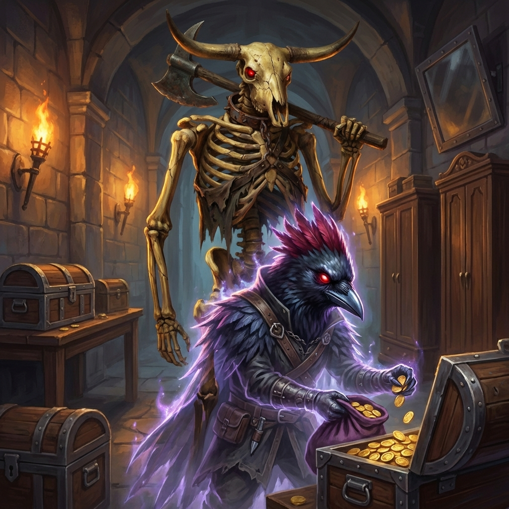
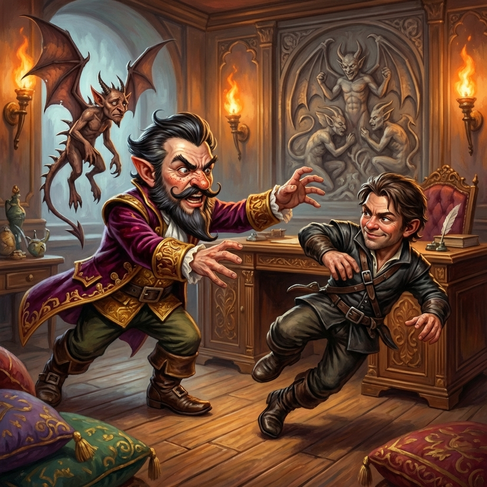
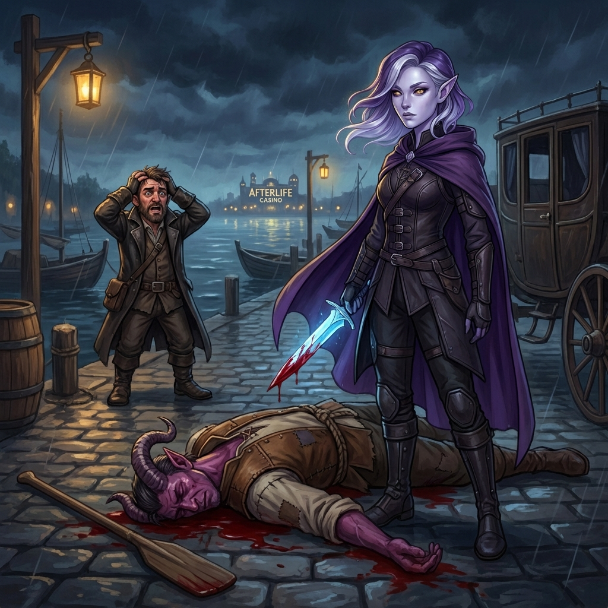

Session 3: The Stygian Gambit (Part 2)
Date: January 30, 2026
Location: The Afterlife Casino
Adventure: The Stygian Gambit (Keys From The Golden Vault)
Previously...
The party descended into the Afterlife Casino with a mission: steal the golden erinyes statuette, recover five thousand gold pieces, and embarrass Quentin Togglepocket in front of his guests.
They arrived in disguise. Blood Feather's feathers dyed black. Slim's cowboy hat hidden away. Captain Kiara hooded and watchful. And at their side, a new ally—Maltus Draught—former enforcer, current traitor to his old master.
The tables were kind... eventually. Blood Feather pushed his luck and won big. Then came the real work: a lifted pass card, stolen tournament chips, dirty deals in the shadows.
And then the circus happened. A hydra. Demonic baboons. The crowd screaming. And Blood Feather—psychic blades glowing purple—driving them straight through the hydra's final head.
The Afterlife Casino had its new champion. But celebration came with a price. Quentin Togglepocket descended from his balcony. He slow-clapped. He smiled. And he looked directly at Maltus.
"Well, well. Maltus Draught. I was wondering when you'd crawl back."
There's history there. Unfinished business. And now Quentin is watching.
Act 1: The Maryam Bikram Confrontation
The session opened with an unexpected complication. Maryam Bikram, Captain of the Varkenbluff Museum guard, recognized the party from the Murkmire Malevolence job. Off-duty and gambling, she was furious about the three weeks of double shifts caused by the Allosaur skeleton incident.
"You're the ones who burned down the Allosaur skeleton. You're the reason I've been doing double shifts for THREE WEEKS."
She demanded 35 gp for her silence. The party paid in full—then tried to pickpocket it back. Failed miserably. She noticed.
Maryam took the gold and returned to the dice tables with a warning: "If I hear about ANY trouble tonight... I'm talking."
Act 2: Day 1 Reconnaissance
With the immediate threat handled, the party began planning.
Blood Feather's Invisible Recon
- Maltus cast Invisibility on Blood Feather
- Blood Feather entered Quentin's office through the staff door
- Complication: Quentin noticed something (possibly the door movement)
- Quentin became ON ALERT but Blood Feather escaped undetected
- Explored the back hallways — found nothing of note
The Rat Race
When Quentin emerged for his evening rounds, the party used the distraction to blend in at the rat racing tables. Blood Feather bet 10 gp on Rat #3 and won (+30 gp profit).
The Gold Coin Revelation
Quentin's gold coin (received after the hydra fight) was revealed to be a hotel room comp. The party decided to spend the night and execute the heist the following day at dusk.
Act 3: The Coordinated Heist
At dusk the next day, the team divided responsibilities:
| Blood Feather | Vault infiltration (invisible) |
| Maltus Draught | Invisibility caster, tournament cover |
| Slim Pickens | Statuette grab (lock pick) |
| Freya | Bag of Holding handler |
| Captain Kiara | Key relay runner (180 ft dash) |
The Key Relay System
- Blood Feather retrieves glass key from Quentin's office
- Kiara receives key at rat tables
- Kiara sprints to escape the tournament hall (180 ft movement)
- Slim receives key for display case unlock
Act 4: The Vault Heist
During Quentin's rounds, Maltus cast Invisibility on Blood Feather.
Quentin's Office
- Blood Feather located the glass display case key in the top desk drawer
- Retrieved Virgil's Rod (bone rod with copper minotaur heads) — placed in Bag of Holding
- Passed the glass key to Kiara for relay to Slim
The Vault — Gold Extraction
Blood Feather used the pass card to bypass the fire trap and entered the vault. The gold extraction was methodical:
| Chest 1 | 1,000 gp | 1,000 gp total |
| Chest 2 | 2,000 gp | 3,000 gp total |
| Chest 3 | 2,500 gp | 5,500 gp total |
| Chest 4 | 3,500 gp | 9,000 gp total |
Blood Feather exceeded the 5,000 gp mission requirement by 4,000 gp.
Act 5: The Statuette Grab — "Smokescreen Relay"
With the vault cleared, the team executed their statuette plan.
The Distraction
- Blood Feather (still invisible) used Prestidigitation to soil one guard's pants
- The humiliated guard moved away from his post
- A smoke bomb was deployed
The Grab
- Slim Pickens unlocked the display case with the glass key
- Freya grabbed the Golden Erinyes Statuette and placed it in the Bag of Holding
- A rock was placed on the pedestal as weight replacement
- Freya cast Minor Illusion to make the rock appear as the statuette
Complication — Freya Grappled
On the way out, Freya was grappled by a guard who saw through the chaos—but she broke free and escaped via misty step.
Act 6: Quentin's Humiliation
Quentin confronted them on the main casino floor. He summoned one spined devil.
He tried to grapple Slim.
Failed.
Slim wriggled free like a greased fish. The party escaped.
Act 7: The Escape
Blood Feather Secures the Boat
- Moved ahead to the ferry dock
- Identified Tim, a tiefling ferrier working the late shift
Captain Kiara's Sprint
- Used her 180 ft movement to close distance rapidly
- Ensured the party could reach the ferry before pursuit closed in
Tim the Tiefling Ferrier
- Blood Feather offered Tim 100 gp to ferry them across
- When Tim hesitated, Blood Feather threatened him with a dagger
- Tim reluctantly agreed
Escape Coordination
- Blood Feather dropped a rope in the water behind the ferry to slow pursuers
- Party reached the carriage rendezvous point
Act 8: The Dark Turn — Tim's Murder
After securing the boat and reaching the carriage meeting point, the party faced a choice about Tim the tiefling ferrier—a witness to their escape who could identify them.
Tim refused to accompany the group further. He just wanted to be paid and return to his normal life. Blood Feather gave Tim 100 gp for the ferry ride.
The Frame Job
Blood Feather, planning ahead, slipped the following items into Tim's pocket without his knowledge:
- The glass display case key
- Two security pass cards
Intent: If Tim's body is found, the planted evidence makes him appear to be the "inside man" for the heist.
The Murder
Freya lured Tim away from the group and slit his throat.
Slim was not happy.
"This isn't how I operate."
This moment created significant friction between Slim and Freya/Blood Feather. Slim made clear that murdering an innocent bystander violated his personal code. The divide may simmer — or erupt — in future sessions.
Session Outcomes
Loot Acquired
| Golden Erinyes Statuette | Plot item | In Bag of Holding |
| Vault Gold | 9,000 gp | In Bag of Holding |
| Virgil's Control Rod | — | Turned to dust (left casino) |
Consequences
- Tim the Ferrier: Dead. Framed as inside man.
- Quentin: Humiliated. Will seek revenge.
- "Large Winner Cashout" Alarm: Casino knows significant gold is missing.
- Maryam Bikram: Paid to stay quiet, but will she?
- Slim: Morally conflicted about the murder.
Party Tension
The murder of Tim created a rift within the group. Slim did not agree with killing an innocent bystander who posed no real threat.
"He was a FERRIER. He rowed BOATS. He wasn't gonna talk—WE PAID him!"
This may simmer into future conflict.
Session 3 ended with the party escaping the casino. The meeting with Verity awaits...